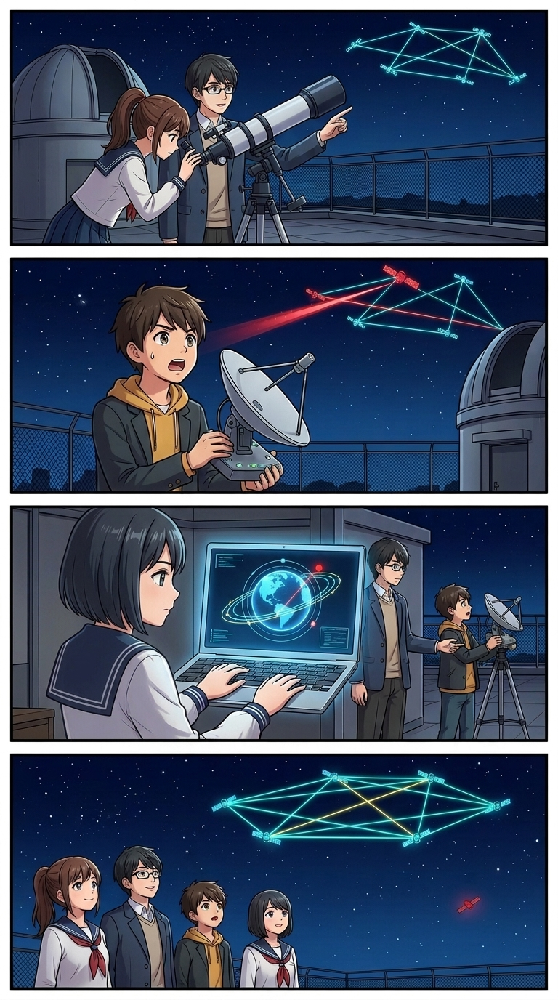
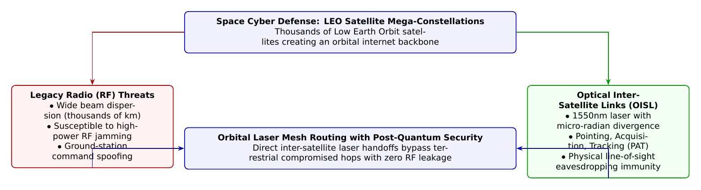

🎨 4コマ漫画挿絵（文字なし）
AI高解像度生成
▲ 【挿絵】青葉台高校 情報科学部＆帝都科学大学サイバーディフェンス・ラボでの実践シーン
💬 4コマ漫画キャラクターセリフ (Story Dialogue Script)
日・英バイリンガル (JA / EN)[蓮]「これぞ低軌道（LEO）衛星コンステレーション！ 地上の光ファイバーが届かない砂漠や海洋にも超高速通信を届けてるんだ」
[Ren] "That's a Low Earth Orbit constellation! Beaming high-speed broadband to remote deserts and oceans!"
[葵]「宇宙の重要インフラなのに、妨害電波を一発食らったら地球全体の通信がストップしちゃうの！？」
[Aoi] "If our vital orbital infrastructure gets jammed by rogue RF beams, global connectivity halts!?"
[蓮]「時速2万8千キロで飛び交う衛星同士がナノラジアン精度で光軸を合わせ、宇宙空間で暗号鍵を共有するんだ！」
[Ren] "Satellites cruising at 28,000 km/h align laser beams with nanoradian precision, establishing quantum keys in orbit!"
[全員]「科学の光条が宇宙を繋ぎ、新時代のサイバー空間を揺るぎなく護り抜く！」
[All] "Beams of scientific light unite the cosmos, guarding tomorrow's cyberspace with unyielding strength!"
📖 小説本文
冬の澄み渡る夜空の下、青葉台高校の屋上天文台。冷たい風の中、ドームのスリットからは満天の星々と、その間を規則正しい速度で静かに横切っていく微かな光の粒が見えていた。
「……あ、また見えた！ 1機、2機、3機……全部等間隔で並んで飛んでる！」
橘葵が天体望遠鏡の接眼レンズから顔を離し、夜空を指差して声を弾ませた。 「スターリンクみたいな衛星コンステレーションでしょ？ 昔の衛星って赤道上空3万6千キロの静止軌道にポツンと浮かんでるイメージだったけど、今は高度数百キロの宇宙を何千機もの小型衛星が群れ（コンステレーション）になって駆け巡ってるんだよね！」
「そうなんだよ、葵先輩」神崎蓮がポータブルスペクトラムアナライザーを調整しながら頷いた。「地表から500km程度の低軌道（LEO: Low Earth Orbit）なら、電波の往復遅延がわずか数十ミリ秒で済むから、地上の光回線と変わらない低遅延でオンラインゲームやビデオ通話、さらには自動運転やドローンの遠隔制御まで可能になるんだ」
「でもね」ドアを開けて屋上に上がってきた城崎悠真が、あたたかい甘酒のポットを手に語りかけた。 「宇宙空間が新たなサイバー空間のバックボーンになったことで、**『宇宙サイバーセキュリティ（Space Cyber Defense）』**が世界中の安全保障と重要インフラ防御の最前線に浮上しているんだ」
「宇宙のサイバー攻撃……？」葵が目を瞬かせた。「宇宙空間にハッカーがロケットで飛んでいくわけじゃないよね？」
「もちろん物理的に乗り込むわけじゃないよ」悠真が笑って首を振った。「従来の衛星通信はKu帯やKa帯といったマイクロ波の『電波（RF）』を使っていた。電波は宇宙空間で広範囲に拡散するから、地上の不正局から偽のコマンドパケットを送信するスプーフィングや、大電力のノイズを浴びせて通信を麻痺させる**ジャミング（妨害電波攻撃）**、そして衛星の通信を丸ごと盗聴する攻撃に対して極めて脆弱だったんだ」
白石結衣がタブレットの画面に、軌道上の衛星メッシュネットワークのシミュレーションを映し出した。 「そこで横浜国立大学SPIRAL（落合秀樹教授、四方順司教授ら）のワイヤレス通信・量子暗号研究が拓くのが、電波を脱却した**『光衛星間リンク（OISL: Optical Inter-Satellite Links）』**と**『軌道上量子セキュリティ』**のフロンティアです」
---
📊 セキュリティ構造図解 (TikZ LuaLaTeX生成)
国家安全基準・工学図解
▲ 【技術構造図】IPAデジタルスキル標準・国際規格に準拠した仕組みのモデル化